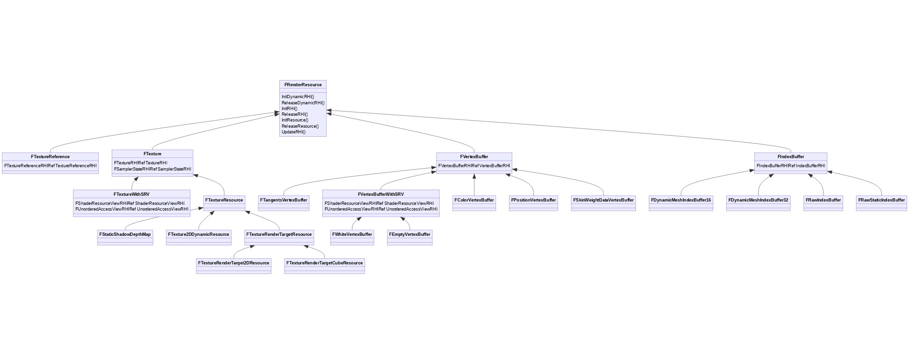

RHI
全称是 Render Hardware Interface（渲染硬件接口）
，是 UE 渲染体系中非常基础且重要的模块，封装了众多图形 API（DirectX、OpenGL、Vulkan、Metal）之间的差异，对 Game 和 Renderer 模块提供了简便且一致的概念、数据、资源和接口，实现一份渲染代码跑在多个平台的目标。
开启 RHI 线程的情况下，与 RHI 相伴相随的还有 RHI 线程
，它负责将渲染线程 Push 进来的 RHI 中间指令转译到对应图形平台的 GPU 指令。在部分图形 API（DX12、Vulkan、主机）支持并行的情况下，如果渲染线程是并行生成的 RHI 中间指令，那么 RHI 线程也会并行转译。
# RHI 基础
# FRenderResource
FRenderResource 是渲染线程的渲染资源代表，由渲染线程管理和传递，介于游戏线程和 RHI 线程的中间数据。FRenderResource 只是基础父类，定义了一组渲染资源的行为，实际的数据和逻辑由子类实现。涉及的子类和层级比较多且复杂。
他的子类又很多，例如贴图，vertexbuffer，indexbuffer

# FRHIResource
是 FRenderResource 的父类，FRHIResource 提供了几种功能：引用计数、延迟删除及追踪、运行时数据和标记。RHIResource 的种类和子类都非常多，可分为状态块、着色器绑定、着色器、管线状态、缓冲区、纹理、视图以及其它杂项。需要注意的是，以上只是显示了平台无关的基础类型，实际上，在不同的图形 API 中。例如
- FRHIRenderQueryPool
- FRHIRenderQuery
- FRHITexture
- FRHITexture2D
- FRHITexture2DArray
- FRHITexture3D
而其他图形 api 都是继承他们各自类

# FRHICommand
FRHICommand 是 RHI 模块的渲染指令基类，这些指令通常由渲染线程通过命令队列 Push 到 RHI 线程，在合适的时机由 RHI 线程执行。FRHICommand 同时又继承自 FRHICommandBase
RHI 命令种类繁多，主要包含以下几大类：
- 数据和资源的设置、更新、清理、转换、拷贝、回读。
- 图元绘制。
- Pass、SubPass、场景、ViewPort 等的开始和结束事件。
- 栅栏、等待、广播接口。
- 光线追踪。
- Slate、调试相关的命令。
# FRHICommandList
FRHICommandList 是 RHI 的指令队列，用来管理、执行一组 FRHICommand 的对象。
FRHICommandListBase定义了命令队列所需的基本数据（命令列表、设备上下文）和接口（命令的刷新、等待、入队、派发等，内存分配）。FRHIComputeCommandList定义了计算着色器相关的接口、GPU 资源状态转换和着色器部分参数的设置。FRHICommandList定义了普通渲染管线的接口，包含 VS、PS、GS 的绑定，图元绘制，更多着色器参数的设置和资源状态转换，资源创建、更新和等待等等。
FRHICommandList 还有数个子类，就是 FRHICommandListImmediate，他封装了立即模式的图形 API 接口，在 UE 渲染体系中被应用得非常广泛。它额外定义了资源的操作、创建、更新、读取和状态转换接口，也增加了线程同步和 GPU 同步的接口。


# RHIContext, DynamicRHI
# IRHICommandContext
IRHICommandContext 是 RHI 的命令上下文接口类，定义了一组图形 API 相关的操作。在可以并行处理命令列表的平台上，它是一个单独的对象。
IRHICommandContext 的接口和 FRHICommandList 的接口高度相似且重叠。IRHICommandContext 还有许多子类：
- IRHICommandContextPSOFallback：不支持真正的图形管道的 RHI 命令上下文。
- FNullDynamicRHI：空实现的动态绑定 RHI。
- FOpenGLDynamicRHI：OpenGL 的动态 RHI。
- FD3D11DynamicRHI：D3D11 的动态 RHI。
- FMetalRHICommandContext：Metal 平台的命令上下文。
- FD3D12CommandContextBase：D3D12 的命令上下文。
- FVulkanCommandListContext：Vulkan 平台的命令队列上下文。
- FEmptyDynamicRHI：动态绑定的 RHI 实现的接口。
- FValidationContext：校验上下文。
上述的子类中，平台相关的部分子类还继承了 FDynamicRHI。IRHICommandContextPSOFallback 比较特殊，它的子类都是不支持并行绘制的图形 API（OpenGL、D3D11）。
# IRHICommandContextContainer (ue5 已弃用)
IRHICommandContextContainer 就是包含了 IRHICommandContext 对象的类型，存储了一个或一组命令上下文的容器，以支持并行化地提交命令队列，只在 D3D12、Metal、Vulkan 等现代图形 API 中有实现。

# FDynamicRHI
FDynamicRHI 是由动态绑定的 RHI 实现的接口，它定义的接口和 CommandList、CommandContext 比较相似，

需要注意的是，传统图形 API（D3D11、OpenGL）除了继承 FDynamicRHI，还需要继承 IRHICommandContextPSOFallback，因为需要借助后者的接口处理 PSO 的数据和行为，以保证传统和现代 API 对 PSO 的一致处理行为。也正因为此，现代图形 API（D3D12、Vulkan、Metal）不需要继承 IRHICommandContext 的任何继承体系的类型，单单直接继承 FDynamicRHI 就可以处理 RHI 层的所有数据和操作。
既然现代图形 API（D3D12、Vulkan、Metal）的 DynamicRHI 没有继承 IRHICommandContext 的任何继承体系的类型
# FD3D12DynamicRHI

# RHI 体系总览

# RHI 机制
# RHI 命令执行
# FRHICommandListExecutor
FRHICommandListExecutor 负责将 Renderer 层的 RHI 中间指令转译（或直接调用）到目标平台的图形 API，它在 RHI 体系中起着举足轻重的作用，在派发和转译命令队列时，可能在专用的 RHI 线程执行，也可能在渲染线程或工作线程执行。
# GRHICommandList
是 FRHICommandListExecutor 的实例。
总结一下这些任务变量的作用：
| 任务变量 | 执行线程 | 描述 |
|---|---|---|
| AllOutstandingTasks | 渲染、RHI、工作 | 所有在处理或待处理的任务列表。类型是 FParallelTranslateSetupCommandList、FParallelTranslateCommandList。 |
| WaitOutstandingTasks | 渲染、RHI、工作 | 待处理的任务列表。类型是 FParallelTranslateSetupCommandList、FParallelTranslateCommandList。 |
| RHIThreadTask | RHI、工作 | 正在处理的 RHI 线程任务。类型是 FExecuteRHIThreadTask。 |
| PrevRHIThreadTask | RHI、工作 | 上一次处理的 RHIThreadTask。类型是 FExecuteRHIThreadTask。 |
| RenderThreadSublistDispatchTask | 渲染、RHI、工作 | 正在派发（提交）的任务。类型是 FDispatchRHIThreadTask。 |
# D3D11 命令执行
在 PC 的默认图形 API（D3D11）下，r.RHICmdBypass1 且 r.RHIThread.Enable0，FRHICommandList 将直接调用图形 API 的上下文的接口，相当于同步调用图形 API，此时的图形 API 运行于渲染线程（如果开启）。
接着将 r.RHICmdBypass 设为 0，但保持 r.RHIThread.Enable 为 0，此时不再直接调用 Context 的方法，而是通过生成一条条单独的 FRHICommand，然后由 FRHICommandList 相关的对象执行。
以 FRHICommandList::DrawPrimitive 为例，调用流程示意图如下
↓ FRHICommandListImmediate::ImmediateFlush
↓ FRHICommandListExecutor::ExecuteList
↓ FRHICommandListExecutor::ExecuteInner
↓ FRHICommandListExecutor::ExecuteInner_DoExecute
↓ FRHICommand::ExecuteAndDestruct
↓ FRHICommandDrawPrimitive::Execute
↓ INTERNAL_DECORATOR
↓ FD3D11DynamicRHI::RHIDrawPrimitive
# ImmediateFlush
1 | |
# 并行渲染
本篇开头也提到了在开启 RHI 线程的情况下，RHI 线程负责将渲染线程 Push 进来的 RHI 中间指令转译到对应图形平台的 GPU 指令。如果渲染线程是并行生成的 RHI 中间指令，那么 RHI 线程也会并行转译。

# FParallelCommandListSet
FParallelCommandListSet 拥有以下子类，以满足不同 Pass 或场合的并行渲染逻辑：
- FShadowParallelCommandListSet：阴影渲染的并行渲染命令队列集合。
- FRDGParallelCommandListSet：RDG 系统的并行渲染命令队列集合。
FParallelMeshDrawCommandPass::DispatchDraw 调用之后，创建若干个 FRHICommandList、FDrawVisibleMeshCommandsAnyThreadTask 任务和任务同步事件，然后将它们全部加入到 ParallelCommandListSet 的列表中。这样，当 ParallelCommandListSet 被析构时，就可以真正地派发命令队列。
# QueueParallelAsyncCommandListSubmit
调用 FParallelCommandListSet::Dispatch 之后，会进入 FRHICommandListBase::QueueParallelAsyncCommandListSubmit
开启并行命令队列提交需要满足以下条件：
- 开启了 RHI 线程，即 IsRunningRHIInSeparateThread () 为 true。
- 当前使用的图形 API 支持并行执行，即 GRHISupportsParallelRHIExecute 要为 true。
- 开启了延迟上下文，即 CVarRHICmdUseDeferredContexts 不为 0。
无论是哪个图形 API，都需要指定一个主 CommandList（即 ParentCommandList），以便调用它的 QueueParallelAsyncCommandListSubmit 提交设置命令队列的任务。上面提交到 RHI 线程的任务对象是 FParallelTranslateSetupCommandList，
# FParallelTranslateSetupCommandList
FParallelTranslateSetupCommandList 用于建立并行（或串行）提交子命令队列的任务
如果命令数量太少，所需的线程数量过少，直接使用串行转译接口 FRHICommandWaitForAndSubmitSubList。
并行逻辑分支中，RHIGetCommandContextContainer 从具体的 RHI 子类中获取上下文容器，只在 D3D12、Vulkan、Metal 等现代图形平台中有实现，其它图形平台皆返回 nullptr。
每个线程会提交 1~N 个子命令队列，以确保它们的绘制命令总数不少于 MinSize，提升每个线程的提交效率。
每个线程会创建一个转译任务 FParallelTranslateCommandList，然后利用 RHICmdList 的 FRHICommandWaitForAndSubmitSubListParallel 取等待子命令列表的并行提交。
注意 FParallelTranslateSetupCommandList 的预期线程由 CPrio_FParallelTranslateSetupCommandList 决定：
1
2
3
4
5
6
7
8
9
10
11
12
13FAutoConsoleTaskPriority CPrio_FParallelTranslateSetupCommandList
// 控制台名称.
TEXT("TaskGraph.TaskPriorities.ParallelTranslateSetupCommandList"),
// 描述.
TEXT("Task and thread priority for FParallelTranslateSetupCommandList."),
// 如果有高优先级的线程, 使用之.
ENamedThreads::HighThreadPriority,
// 使用高任务优先级.
ENamedThreads::HighTaskPriority,
// 如果没有高优先级的线程, 则使用普遍优先级的线程, 但使用高任务优先级代替之.
ENamedThreads::HighTaskPriority
);因此可知，设置转译的任务会被 TaskGraph 系统优先执行，但发起设置转译任务的线程还是渲染线程而非 RHI 线程。
# FParallelTranslateCommandList
FParallelTranslateCommandList 便是真正地转译命令队列，如果是 prepass，使用普通优先级的线程但高任务优先级，其它 pass 则使用普通优先级的线程和普通的任务优先级。
# Pass 渲染
# Subpass 渲染
先说一下 Subpass 的由来、作用和特点。
在传统的多 Pass 渲染中，每个 Pass 结束时通常会渲染出一组渲染纹理，部分成为着色器参数提供给下一个 Pass 采样读取。这种纹理采样方式不受任何限制，可以读取任意的领域像素，使用任意的纹理过滤方式。这种方式虽然使用灵活，但在 TBR（Tile-Based Renderer）硬件架构的设备中会有较大的消耗：渲染纹理的 Pass 通常会将渲染结果存储在 On-chip 的 Tile Memory 中，待 Pass 结束后会写回 GPU 显存（VRAM）中，写回 GPU 显存是个耗时耗耗电的操作。
传统多 Pass 之间的内存存取模型，多次发生于 On-Chip 和全局存储器之间。
如果出现一种特殊的纹理使用情况：上一个 Pass 渲染处理的纹理，立即被下一个 Pass 使用，并且下一个 Pass 只采样像素位置自身的数据，而不需要采样邻域像素的位置。这种情况就符合了 Subpass 的使用情景。使用 Subpass 渲染的纹理结果只会存储在 Tile Memory 中，在 Subpass 结束后不会写回 VRAM，而直接提供 Tile Memory 的数据给下一个 Subpass 采样读取。这样就避免了传统 Pass 结束写回 GPU 显存以及下一个 Pass 又从 GPU 显存读数据的耗时耗电操作，从而提升了性能。
Subpass 之间的内存存取模型，都发生在 On-Chip 内。
Subpass 主要集中在移动端渲染器，原因是移动端 TBR 架构的硬件设备越来越多，占比愈来愈大，Subpass 成为移动端主渲染器的首选是必然且合理的。在 Subpass 渲染中，还是涉及到了 Pass 的 Overlap 问题，采用 Overlap 可以提升 GPU 的使用率，提升渲染性能（下图）

# RHI 资源管理
FRHIResource 自身拥有引用计数和引用计数增加、减少的接口：
1 | |
我们不需要直接引用和管理 FRHIResource 的实例和计数，而是结合 TRefCountPtr 的模板类实现自动化管理 RHI 资源，需要特意指出，FRHIResource 的析构函数并没有释放任何 RHI 资源，通常需要在 FRHIResource 的图形平台相关的子类析构函数中执行，RHI 资源的释放主要在 FlushPendingDeletes 接口中，
RHI 抽象层主要是以上几处调用 FlushPendingDeletes，但以下的图形平台相关的接口也会调用：
- FD3D12Adapter::Cleanup()
- FD3D12Device::Cleanup()
- FVulkanDevice::Destroy()
- FVulkanDynamicRHI::Shutdown()
- FD3D11DynamicRHI::CleanupD3DDevice()
# 多线程渲染

UE 的渲染流程中，最多存在 4 种工作线程：游戏线程（Game Thread）、渲染线程（Render Thread）、RHI 线程和 GPU（含驱动）。
游戏线程是整个引擎的驱动者，提供所有的源数据和事件，以驱动渲染线程和 RHI 线程。游戏线程领先渲染线程不超过 1 帧，更具体地说如果第 N 帧的渲染线程在第 N+1 帧的游戏线程的 Tick 结束时还没有完成，那么游戏线程会被渲染线程卡住。反之，如果游戏线程负载过重，没能及时发送事件和数据给渲染线程，也会导致渲染线程卡住。
渲染线程负责产生 RHI 的中间命令，在适当的时机派发、刷新指令到 RHI 线程。因此，渲染线程的卡顿也可能导致 RHI 的卡顿。
RHI 线程负责派发（可选）、转译、提交指令，且渲染的最后一步需要 SwapBuffer，这一步需要等待 GPU 完成渲染工作。因此，渲染 GPU 的繁忙也会导致 RHI 线程的卡顿。
除了游戏线程，渲染线程、RHI 线程和 GPU 的工作都是存在间隙的，即游戏线程提供给渲染任务的时机会影响渲染工作的密度，也会影响到渲染的时间，小量多次会浪费渲染效率。
# RHI 控制台变量
前面章节的代码也显示 RHI 体系涉及的控制台变量非常多，下面列出部分控制台变量，以便调试、优化 RHI 渲染效果或效率：
| 名称 | 描述 |
|---|---|
| r.RHI.Name | 显示当前 RHI 的名字，如 D3D11。 |
| r.RHICmdAsyncRHIThreadDispatch | 实验选项，是否执行 RHI 调度异步。可使数据更快地刷新到 RHI 线程，避免帧末尾出现卡顿。 |
| r.RHICmdBalanceParallelLists | 允许启用 DrawList 的预处理，以尝试在命令列表之间均衡负载。0：关闭，1：开启，2：实验选项，使用上一帧的结果（在分屏等不做任何事情）。 |
| r.RHICmdBalanceTranslatesAfterTasks | 实验选项，平衡并行翻译后的渲染任务完成。可最小化延迟上下文的数量，但会增加启动转译的延迟。 |
| r.RHICmdBufferWriteLocks | 仅与 RHI 线程相关。用于诊断缓冲锁问题的调试选项。 |
| r.RHICmdBypass | 是否绕过 RHI 命令列表，立即发送 RHI 命令。0：禁用（需开启多线程渲染），1：开启。 |
| r.RHICmdCollectRHIThreadStatsFromHighLevel | 这将在执行的 RHI 线程上推送统计信息，这样就可以确定它们来自哪个高层级的 Pass。对帧速率有不利影响。默认开启。 |
| r.RHICmdFlushOnQueueParallelSubmit | 在提交后立即等待并行命令列表的完成。问题诊断。只适用于部分 RHI。 |
| r.RHICmdFlushRenderThreadTasks | 如果为真，则每次调用时都刷新渲染线程任务。问题诊断。这是一个更细粒度 cvars 的主开关。 |
| r.RHICmdForceRHIFlush | 对每个任务强制刷新发送给 RHI 线程。问题诊断。 |
| r.RHICmdMergeSmallDeferredContexts | 合并小的并行转译任务，基于 r.RHICmdMinDrawsPerParallelCmdList。 |
| r.RHICmdUseDeferredContexts | 使用延迟上下文并行执行命令列表。只适用于部分 RHI。 |
| r.RHICmdUseParallelAlgorithms | True 使用并行算法。如果 r.RHICmdBypass 为 1 则忽略。 |
| r.RHICmdUseThread | 使用 RHI 线程。问题诊断。 |
| r.RHICmdWidth | 控制并行渲染器中大量事物的任务粒度。 |
| r.RHIThread.Enable | 启用 / 禁用 RHI 线程，并确定 RHI 工作是否在专用线程上运行。 |
| RHI.GPUHitchThreshold | GPU 上检测卡顿的阈值 (毫秒)。 |
| RHI.MaximumFrameLatency | 可以排队进行渲染的帧数。 |
| RHI.SyncThreshold | 在垂直同步功能启用前的连续 “快速” 帧数。 |
| RHI.TargetRefreshRate | 如果非零，则显示的更新频率永远不会超过目标刷新率 (以 Hz 为单位)。 |